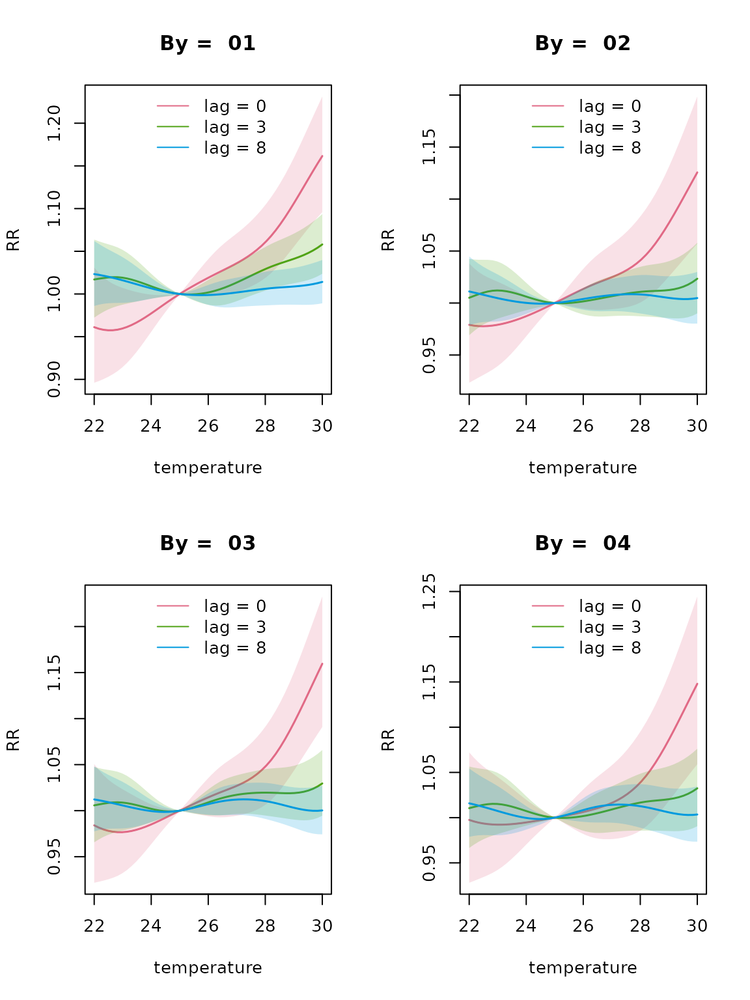
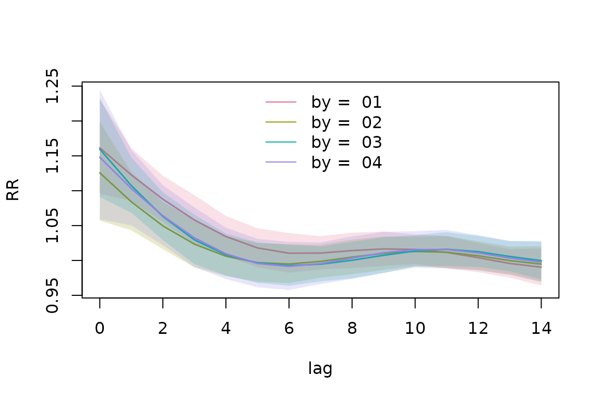
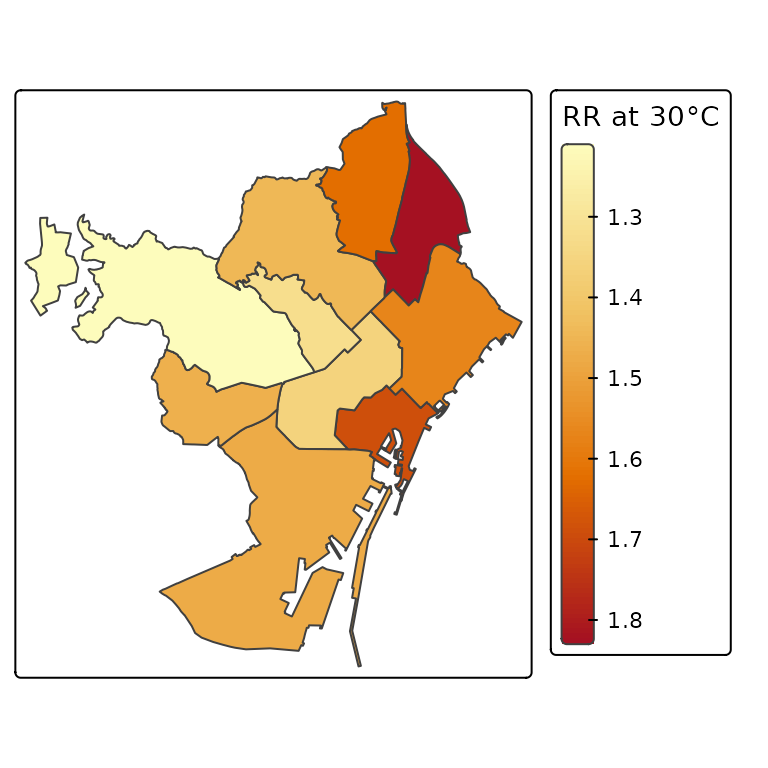
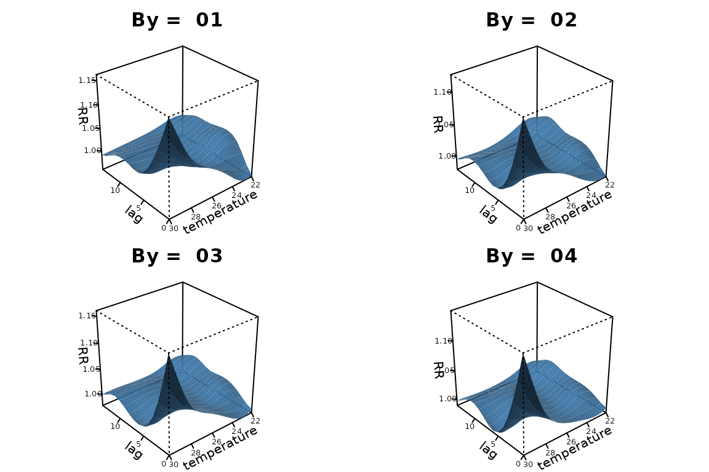
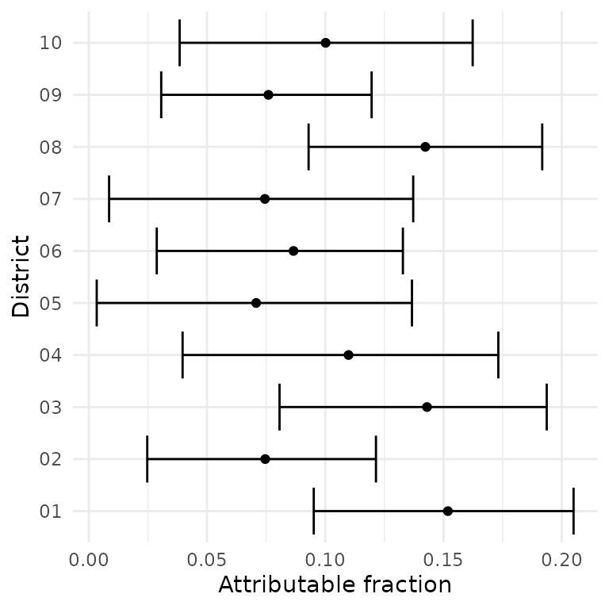

Spatially varying DLNMs
spatially-varying-dlnms.RmdIntroduction
A standard distributed lag non-linear model (DLNM) assumes that the exposure-lag-response curve is common across all locations. While this assumption can be useful, it may be too restrictive. In many settings, the association between exposure and response may vary across space. For example, the relationship between temperature and mortality may differ between regions due to differences in population characteristics, climate, land use or other local factors.
dlnmLPS provides methods for fitting spatially varying
distributed lag non-linear models, allowing the exposure-lag-response
association to differ between spatial locations (Rutten et al. 2026). This provides a flexible
framework for investigating both the exposure-response relationship and
geographical variation.
In this vignette, we demonstrate how to fit spatially varying DLNMs
using dlnmLPS. We subsequently show how to obtain and
visualize the estimated spatially varying exposure-lag-response
curves.
The basic functionality of dlnmLPSis introduced in
vignette("introduction_dlnmlps").
Spatially varying DLNMs
Example data
For illustration, we use the following simulated example data:
# Example data
data(barcelona_temp)This simulated dataset contains daily minimum, maximum and mean temperature in all 10 districts of Barcelona during the summer period (1 June–30 September) between 2007 and 2011. The population size, deprivation index and daily number of deaths are included for every district. For this example, we will investigate how the effect of maximum temperature on mortality spatially varies. The outcome and exposure variable can be inspected:
# Inspect the data
head(barcelona_temp)
#> date Tmax Tmin Tmean District pop depriv dtot
#> 1 2007-06-01 25.85997 17.93684 21.89841 01 659845.8 1.188957 26
#> 2 2007-06-02 25.71266 17.21590 21.46428 01 659845.8 1.188957 27
#> 3 2007-06-03 25.33624 16.95453 21.14538 01 659845.8 1.188957 23
#> 4 2007-06-04 25.47256 15.42090 20.44673 01 659845.8 1.188957 23
#> 5 2007-06-05 23.89031 16.21367 20.05199 01 659845.8 1.188957 26
#> 6 2007-06-06 24.08012 16.47465 20.27739 01 659845.8 1.188957 18We can extract some additional information from the date such as the day of the week, year and month.
Fitting a spatially varying DLNM
In this example, we fit four different types of DLNMs, differing in penalization and spatial structure assumed on the regional curves (Rutten et al. 2026):
Type I, unpenalized, spatially independent DLNMs;
Type II, penalized, spatially independent DLNMs;
Type III, unpenalized, Leroux-structured DLNMs; and
Type IV, penalized, Leroux-structured DLNMs.
We include month as natural splines with 3 degrees of freedom, year as a random walk of order one, day of the week as a factor and District as a random effect.
Fitting all of these models is very similar. First of all, we can fit
models of Type I and Type III, by using an unpenalized crossbasis and
let it vary by District. Spatially-independent DLNMs can be requested
using fun = “ind”, while Leroux-varying DLNMs can be
specified using fun = “Leroux”. For the latter, a map
containing the neighbourhood structure needs to be provided as well.
# Fit a spatially varying unpenalized DLNM
data(shapefile_bcn)
knots_temp <- quantile(dataset$Tmax, probs = c(0.10,0.50,0.90))
knots_lag <- dlnm::logknots(0:14, nk = 2)
group <- factor(paste0(dataset$District, "-", dataset$year))
basis.max <- dlnm::crossbasis(
dataset$Tmax,
argvar = list(fun = "ns", knots = knots_temp),
arglag = list(fun = "ns", knots = knots_lag),
lag = 14,
group = group
)
model_typeI <- dlnmLPS(dtot ~ factor(dow) +
sm(basis.max,
by = District, arg.by = list(type = "ind")) +
sm(month, arg = list(type = "ns", df = 3)) +
sm(year, arg = list(type = "rw1")) +
sm(District, arg = list(type = "ind")),
data = dataset,
offset = log(pop),
model.comparison = list(DIC = TRUE, WAIC = TRUE, CPO = TRUE),
family = "Poisson")
model_typeIII <- dlnmLPS(dtot ~ factor(dow) +
sm(basis.max,
by = District, arg.by = list(type = "Leroux", map = shapefile_bcn)) +
sm(month, arg = list(type = "ns", df = 3)) +
sm(year, arg = list(type = "rw1")) +
sm(District, arg = list(type = "Leroux", map = shapefile_bcn)),
data = dataset,
offset = log(pop),
model.comparison = list(DIC = TRUE, WAIC = TRUE, CPO = TRUE),
family = "Poisson")Similarly, models of Type II and Type IV can be fitted using a
penalized DLNM, and providing the order of the penalty in
arg:
# Fit a spatially varying penalized DLNM
basis.max_pen <- dlnm::crossbasis(
dataset$Tmax,
argvar = list(fun = "ps", df = 8),
arglag = list(fun = "ps", df = 8),
lag = 14,
group = group
)
model_typeII <- dlnmLPS(dtot ~ factor(dow) +
sm(basis.max_pen, arg = list(pen = 2),
by = District, arg.by = list(type = "ind")) +
sm(month, arg = list(type = "ns", df = 3)) +
sm(year, arg = list(type = "rw1")) +
sm(District, arg = list(type = "ind")),
data = dataset,
offset = log(pop),
model.comparison = list(DIC = TRUE, WAIC = TRUE, CPO = TRUE),
family = "Poisson")
model_typeIV <- dlnmLPS(dtot ~ factor(dow) +
sm(basis.max_pen, arg = list(pen = 2),
by = District, arg.by = list(type = "Leroux", map = shapefile_bcn)) +
sm(month, arg = list(type = "ns", df = 3)) +
sm(year, arg = list(type = "rw1")) +
sm(District, arg = list(type = "Leroux", map = shapefile_bcn)),
data = dataset,
offset = log(pop),
model.comparison = list(DIC = TRUE, WAIC = TRUE, CPO = TRUE),
family = "Poisson")We can compare the performance of the four models using model comparison criteria DIC, WAIC and CPO:
# Compare the estimated associations
model_typeI$DIC; model_typeI$WAIC; -sum(log(model_typeI$CPO))
#> [1] 30385.36
#> [1] 30387.4
#> [1] 15193.58
model_typeII$DIC; model_typeII$WAIC; -sum(log(model_typeII$CPO))
#> [1] 30382.18
#> [1] 30385.72
#> [1] 15192.82
model_typeIII$DIC; model_typeIII$WAIC; -sum(log(model_typeIII$CPO))
#> [1] 30375.74
#> [1] 30377.85
#> [1] 15188.8
model_typeIV$DIC; model_typeIV$WAIC; -sum(log(model_typeIV$CPO))
#> [1] 30366.38
#> [1] 30371.28
#> [1] 15185.51Model Type IV is preferred based on all model selection criteria. To make predictions for temperatures between 22 degrees Celsius and 30 degrees Celsius, compared to a reference level of 25 degrees, and for all districts, we use:
pred_penalized <- pred_crossbasis(
basis = basis.max_pen,
model = model_typeIV,
at_x = seq(22,30,length = 50),
cen = 25,
lag = c(0,14),
CI = TRUE,
by = unique(dataset$District),
exc.prob = TRUE
)Note that we also requested the region-specific exceedance
probabilities. To extract specific predictions of interest, we can use
the wrapper function extract_predictions(). For example, if
we want to extract the overall RRs at 30 degrees and for the first four
districts, we can use:
extract_predictions(pred_penalized, slice_x = 30, slice_by = unique(dataset$District)[1:4],
ptype = "allRRfit")
#> x fit lower upper by
#> 1 30 1.692175 1.504847 1.902821 01
#> 2 30 1.360412 1.162266 1.592337 02
#> 3 30 1.472584 1.281134 1.692644 03
#> 4 30 1.461605 1.209825 1.765784 04We can visualize the temperature-mortality relationship for the first four districts and for lag 0, 3 and 8 as:
plot(pred_penalized, slice_lag = c(0,3,8), ptype = "slices", CI = TRUE, xlab = "temperature",
ylab = "RR", slice_by = unique(dataset$District)[1:4])
The option multiple.plots = FALSE allows visualizing the
results for different districts on one plot. However, this option is
only available for an integer (and not a vector) slice exposure or lag
value or overall RR-curve. The lag-response relationships at 30 degrees,
can be visualized for the four districts using:
plot(pred_penalized, slice_x = 30, ptype = "slices", CI = TRUE, xlab = "lag", ylab = "RR",
multiple.plots = FALSE, slice_by = unique(dataset$District)[1:4])
To visualize these lag-response relationships for all districts and disable the legend and hide the credible intervals, we can specify:
plot(pred_penalized, slice_x = 30, ptype = "slices", CI = FALSE, xlab = "lag", ylab = "RR",
multiple.plots = FALSE, show.legend = FALSE)The overall cumulative relationship can be visualized for all districts using:
plot(pred_penalized, ptype = "overall", CI = FALSE, xlab = "temperature", ylab = "RR",
multiple.plots = FALSE, show.legend = FALSE, col = "black")Moreover, the overall RR for all districts at a temperature value of 30 degrees Celsius could also be presented on a map:
shapefile_bcn$rr <- sapply(pred_penalized, function(x) x$allRRfit[x$x == 30])
tmap::tm_shape(shapefile_bcn) +
tmap::tm_polygons(
fill = "rr",
fill.scale = tmap::tm_scale_continuous(midpoint = 1,
values = hcl.colors(7, palette = "RdYlBu", rev = TRUE)),
fill.legend = tmap::tm_legend(title = "RR at 30°C")
)
#> Registered S3 method overwritten by 'stars':
#> method from
#> st_interpolate_aw.stars sf
To show the cross exposure-lag-response relationship, a 3D plot can
be made. We adapt the default margins, using the argument
mar.
plot(pred_penalized, ptype = "cross", ticktype="detailed",theta=230,
xlab = "lag", ylab = "temperature", zlab = "RR", mar = c(0.5, 0.5, 2, 0.5),
ltheta=200,phi=30,lphi=30,
nticks = 4, shade = 0.75,r=sqrt(3),d=5,cex.axis=0.5, cex.lab=0.8,border=NA,
slice_by = unique(dataset$District)[1:4])
Similarly, a contour plot could also be made. In general, plots show that differences between the different municipalities in the temperature-mortality relationship are relatively small.
It’s also possible to calculate the region-specific attributable
fractions for a specific year, for example 2007. For a spatially-varying
DLNM, the output is automatically grouped using the by
variable, and hence the group argument does not need to be
specified. Adopting the backward perspective, we get:
# Calculate exposure and outcome timeseries
data2007_district <- dataset |>
dplyr::filter(year == 2007) |>
dplyr::arrange(District, date)
# Calculate attributable risk
af2007_district <- attributable_risk(
basis = basis.max_pen,
cases = data2007_district$dtot,
model = model_typeIV,
cen = 25,
x = data2007_district$Tmax,
by = data2007_district$District,
dir = "back",
tot = TRUE,
samples = TRUE)The output can be visualized as:
# Extract results
af_ci <- dplyr::bind_rows(lapply(seq_along(af2007_district$samples), function(i) {
x <- af2007_district$samples[[i]]
data.frame(
ID = x$ID[1],
estimate = af2007_district$fit[[i]]$af,
lower = quantile(x$af, 0.025, na.rm = TRUE),
upper = quantile(x$af, 0.975, na.rm = TRUE)
)
}))
# Visualize results
ggplot2::ggplot(af_ci, ggplot2::aes(x = estimate, y = ID)) +
ggplot2::geom_errorbar(ggplot2::aes(xmin = lower, xmax = upper), orientation = "y") +
ggplot2::geom_point() +
ggplot2::labs(x = "Attributable fraction", y = "District") +
ggplot2::theme_minimal()
Summary
In this vignette, we introduced the spatially varying functionality
of dlnmLPS. We demonstrated how to fit four different types
of spatially-varying DLNMs, differing in penalization and spatial
structure. See also vignette("introduction_dlnmlps") for
more information.